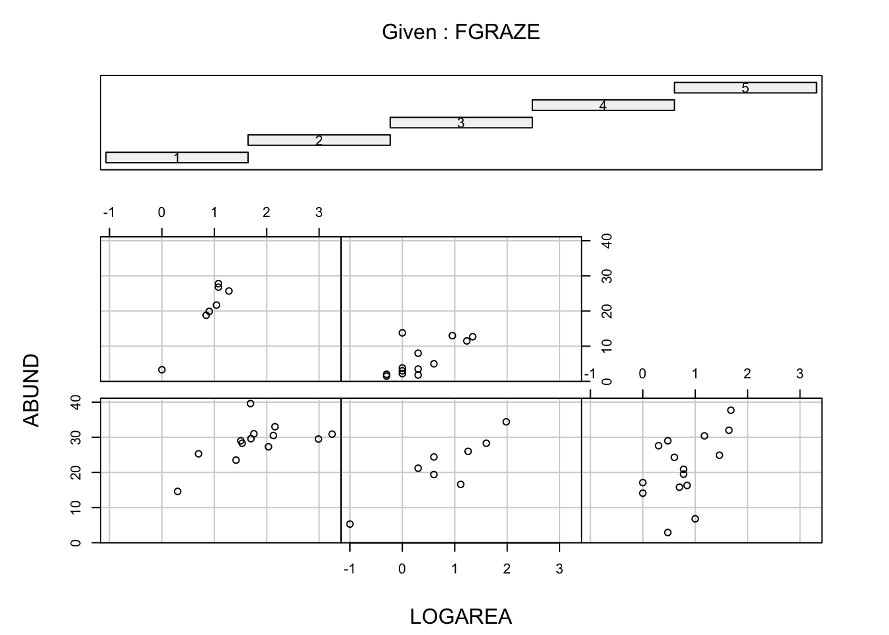

Exercise Solutions
This practical has two exercises, as well as optional supplementary questions. Note that exercise 1 omits important steps of the normal modelling workflow, in particular the model validation and interpretation. This is addressed in Exercise 2.
Exercise 1: Linear model with interaction between continuous and categorical predictors (= explanatory variables)
This exercise builds on the linear model with one continuous predictor, and the linear model with one categorical predictor, by adding these two sources of variation in the same model and allowing their effects to interact (i.e., the effect of one predictor changes with the value of the other predictor).
1. As in previous exercises, either create a new R script (perhaps call it linear_model_3) or continue with your previous R script in your RStudio Project. Again, make sure you include any metadata you feel is appropriate (title, description of task, date of creation etc) and don’t forget to comment out your metadata with a # at the beginning of the line.
2. Import the data file ‘loyn.txt’ into R and take a look at the structure of this dataframe using the str() function. We know that the abundance of birds ABUND increases quickly with the area of the patch LOGAREA, and more slowly for the larger patches (a saturating “log-linear relationship”). We now also know that bird abundance changes in a non-linear way with the grazing intensity FGRAZE. But how do these effects combine together? Would a small patch with low grazing intensity have more birds than a larger patch with high grazing intensity? Could the (poor) fit of the ABUND ~ LOGAREA model for the large patches be improved, if we accounted for grazing intensity in the patches?
loyn <- read.table("./data/loyn.txt", header = TRUE)
str(loyn)
## 'data.frame': 56 obs. of 8 variables:
## $ Site : int 1 2 3 4 5 6 7 8 9 10 ...
## $ ABUND : num 5.3 2 1.5 17.1 13.8 14.1 3.8 2.2 3.3 3 ...
## $ AREA : num 0.1 0.5 0.5 1 1 1 1 1 1 1 ...
## $ DIST : int 39 234 104 66 246 234 467 284 156 311 ...
## $ LDIST : int 39 234 311 66 246 285 467 1829 156 571 ...
## $ YR.ISOL: int 1968 1920 1900 1966 1918 1965 1955 1920 1965 1900 ...
## $ GRAZE : int 2 5 5 3 5 3 5 5 4 5 ...
## $ ALT : int 160 60 140 160 140 130 90 60 130 130 ...
3. As previously we want to treat AREA as a log-transformed area to limit the influence of the few disproportionately large patches, and GRAZE as a categorical variable with five levels. So the first thing we need to do is create the corresponding variables in the loyn dataframe, called LOGAREA and FGRAZE.
loyn$LOGAREA <- log10(loyn$AREA)
# create factor GRAZE as it was originally coded as an integer
loyn$FGRAZE <- factor(loyn$GRAZE)
4. Explore the relationship between grazing and patch area, using a scatterplot. You could explore the joint effect of FGRAZE and LOGAREA on ABUND, using panel plots. Hint: See the function coplot in the Data exploration lecture slide 24, and/or the help page for coplot. Factor levels increase from the bottom-left panel to the top-right panel. What pattern do you see? Is it okay to assume the effect of LOGAREA to be the same for all grazing levels? This is effectively asking if we should let the slope of LOGAREA vary across FGRAZE levels, which is the definition of an interaction.

# There is a lot of variation in there, but:
# The mean abundance seems to decrease as grazing levels increase.
# This is most noticeable in the highest grazing level.
# Within a grazing level, abundance seems to increase with the log-patch area.
# It is unclear from this if the slope of the log-area effect is
# different between grazing levels
5. Fit an appropriate linear model in R to explain the variation in the response variable, ABUND with the explanatory variables LOGAREA and FGRAZE acting interactively. Hint: * is the interaction symbol! Remember to use the data = argument. Assign this linear model to an appropriately named object, like birds.inter.1.
6. Let’s first check the assumptions of your linear model by creating plots of the residuals from the model. Remember, that you can split your plotting device into 2 rows and 2 columns using the par() function before you create the plots. Check each of the assumptions using these plots and report whether your model meets these assumptions.
# first split the plotting device into 2 rows and 2 columns
par(mfrow = c(2,2))
# now create the residuals plots
plot(birds.inter.1)
# To test the normality of residuals assumption we use the Normal Q-Q plot.
# The central residuals are not too far from the Q-Q line but the extremes
# are too extreme (the tails of the distribution are too long). Some
# observations, both high and low, are poorly explained by the model.
# The plot of the residuals against the fitted values suggests these
# extreme residuals happen for intermediate fitted values.
# Looking at the homogeneity of variance assumption (Residuals vs
# Fitted and Scale-Location plot),
# the graphs are mostly messy, with no clear pattern emerging. There is
# a hint of smaller variance with the lowest fitted values, which is not ideal.
# This could mean that the homogeneity of variance assumption is not met
# (i.e. the variances are not the same), but with this amount of data we
# can't tell. ABUND being bounded by zero, it wouldn't be too
# surprising that the variance increases with the mean abundance.
# The observations with the highest leverage don't appear to be overly
# influential, according to the Cook's distances in the Residuals vs
# Leverage plot.
7. Use the summary() function on the first model object to produce the table of parameter estimates. Using this output, take each line in turn and answer the following questions: (A) what does this parameter measure, specifically? (B) What is the biological interpretation of the corresponding estimate? (C) What is the null hypothesis associated with it? (D) Do you reject or fail to reject this hypothesis? I encourage you to get someone to discuss your answers with you.
summary(birds.inter.1)
##
## Call:
## lm(formula = ABUND ~ FGRAZE * LOGAREA, data = loyn)
##
## Residuals:
## Min 1Q Median 3Q Max
## -16.3615 -2.3807 -0.2449 2.6181 11.3529
##
## Coefficients:
## Estimate Std. Error t value Pr(>|t|)
## (Intercept) 21.243 3.987 5.329 2.89e-06 ***
## FGRAZE2 -6.165 4.842 -1.273 0.209285
## FGRAZE3 -7.215 4.820 -1.497 0.141271
## FGRAZE4 -17.910 6.701 -2.673 0.010375 *
## FGRAZE5 -17.043 4.406 -3.868 0.000344 ***
## LOGAREA 4.144 2.057 2.014 0.049843 *
## FGRAZE2:LOGAREA 4.368 3.108 1.405 0.166593
## FGRAZE3:LOGAREA 4.989 3.531 1.413 0.164374
## FGRAZE4:LOGAREA 15.235 5.925 2.572 0.013422 *
## FGRAZE5:LOGAREA 1.996 3.650 0.547 0.587148
## ---
## Signif. codes: 0 '***' 0.001 '**' 0.01 '*' 0.05 '.' 0.1 ' ' 1
##
## Residual standard error: 5.666 on 46 degrees of freedom
## Multiple R-squared: 0.767, Adjusted R-squared: 0.7214
## F-statistic: 16.83 on 9 and 46 DF, p-value: 8.05e-12
# Here the intercept (baseline) is the predicted `ABUND` for LOGAREA = 0,
# for FGRAZE level 1.
# the null hypothesis for the intercept is that the intercept = 0
# (not biologically relevant).
# LOGAREA represents the slope for LOGAREA, specific to level FGRAZE = 1.
# The null hypothesis is that the slope of the relationship
# between LOGAREA and ABUND = 0, for level FGRAZE = 1 only.
# FGRAZE2...5 estimate differences (contrasts) between the *intercept* of
# each level and the *intercept* of the reference level, FGRAZE = 1.
# FGRAZE2...5:LOGAREA estimate differences (contrasts) between the *slope*
# of LOGAREA for each level and the *slope* of LOGAREA for the reference
# level, FGRAZE = 1.
# The Multiple R-square value is 0.76, slightly up from the purely additive
# model (in the optional questions)
# but not much, considering that we have added a whole 4 parameters to the
# model, i.e. nearly doubled its complexity
8. Let’s now plot the predictions of your initial model to figure out how it really fits the data. Here’s a recipe, using the predict() function.
- plot the raw data, using a different colour per
FGRAZElevel - for each
FGRAZElevel in turn, - create a sequence of
LOGAREAfrom the minimum value to the maximum within the grazing level (unless you wish to predict outside the range of observed values) - store it in a data frame (e.g.
dat4pred) containing the variablesFGRAZEandLOGAREA.Remember thatFGRAZEis a factor, so it requires double quotes. - add a predicted column containing the predictions of the model for the new data frame, using
predict() - plot the predictions with the appropriate colours
See the script below, for one of many ways of doing this.
par(mfrow= c(1, 1))
plot(ABUND ~ LOGAREA, data= loyn, col= GRAZE, pch= 16)
# Note: # color 1 means black in R
# color 2 means red in R
# color 3 means green in R
# color 4 means blue in R
# color 5 means cyan in R
# FGRAZE1
# create a sequence of increasing Biomass within the observed range
LOGAREA.seq<- seq(from= min(loyn$LOGAREA[loyn$FGRAZE == 1]),
to= max(loyn$LOGAREA[loyn$FGRAZE == 1]),
length= 20)
# create data frame for prediction
dat4pred<- data.frame(FGRAZE= "1", LOGAREA= LOGAREA.seq)
# predict for new data
dat4pred$predicted<- predict(birds.inter.1, newdata= dat4pred)
# add the predictions to the plot of the data
lines(predicted ~ LOGAREA, data= dat4pred, col= 1, lwd= 2)
# FGRAZE2
LOGAREA.seq<- seq(from= min(loyn$LOGAREA[loyn$FGRAZE == 2]),
to= max(loyn$LOGAREA[loyn$FGRAZE == 2]),
length= 20)
dat4pred<- data.frame(FGRAZE= "2", LOGAREA= LOGAREA.seq)
dat4pred$predicted<- predict(birds.inter.1, newdata= dat4pred)
lines(predicted ~ LOGAREA, data= dat4pred, col= 2, lwd= 2)
# FGRAZE3
LOGAREA.seq<- seq(from= min(loyn$LOGAREA[loyn$FGRAZE == 3]),
to= max(loyn$LOGAREA[loyn$FGRAZE == 3]),
length= 20)
dat4pred<- data.frame(FGRAZE= "3", LOGAREA= LOGAREA.seq)
dat4pred$predicted<- predict(birds.inter.1, newdata= dat4pred)
lines(predicted ~ LOGAREA, data= dat4pred, col= 3, lwd= 2)
# FGRAZE4
LOGAREA.seq<- seq(from= min(loyn$LOGAREA[loyn$FGRAZE == 4]),
to= max(loyn$LOGAREA[loyn$FGRAZE == 4]),
length= 20)
dat4pred<- data.frame(FGRAZE= "4", LOGAREA= LOGAREA.seq)
dat4pred$predicted<- predict(birds.inter.1, newdata= dat4pred)
lines(predicted ~ LOGAREA, data= dat4pred, col= 4, lwd= 2)
# FGRAZE5
LOGAREA.seq<- seq(from= min(loyn$LOGAREA[loyn$FGRAZE == 5]),
to= max(loyn$LOGAREA[loyn$FGRAZE == 5]),
length= 20)
dat4pred<- data.frame(FGRAZE= "5", LOGAREA= LOGAREA.seq)
dat4pred$predicted<- predict(birds.inter.1, newdata= dat4pred)
lines(predicted ~ LOGAREA, data= dat4pred, col= 5, lwd= 2)
legend("topleft",
legend= paste("Graze = ", 5:1),
col= c(5:1), bty= "n",
lty= c(1, 1, 1),
lwd= c(1, 1, 1))
[Optional] Alternative method, using a loop:
# Okay, that was a long-winded way of doing this.
# If, like me, you prefer more compact code and less risks of errors,
# you can use a loop, to save repeating the sequence 5 times:
par(mfrow= c(1, 1))
plot(ABUND ~ LOGAREA, data= loyn, col= GRAZE, pch= 16)
for(g in levels(loyn$FGRAZE)){# `g` will take the values "1", "2",..., "5" in turn
LOGAREA.seq<- seq(from= min(loyn$LOGAREA[loyn$FGRAZE == g]),
to= max(loyn$LOGAREA[loyn$FGRAZE == g]),
length= 20)
dat4pred<- data.frame(FGRAZE= g, LOGAREA= LOGAREA.seq)
dat4pred$predicted<- predict(birds.inter.1, newdata= dat4pred)
lines(predicted ~ LOGAREA, data= dat4pred, col= as.numeric(g), lwd= 2)
}
legend("topleft",
legend= paste("Graze = ", 5:1),
col= c(5:1), bty= "n",
lty= c(1, 1, 1),
lwd= c(1, 1, 1))
Take some time to observe the predictions from the model, and how the lines have different intercepts and slopes (as assumed by the model with interactive effects).
9. From a biological point of view, what have we learned so far from the interactive model? (Assume that the assumptions are adequately met, for now). Do you think the model is biologically plausible? Is it supported statistically?
# INTERACTIVE MODEL
# The slopes of the LOGAREA effect across grazing levels are all over the
# place, without any coherent pattern (for instance, they could have been
# increasing or decreasing gradually from low to high grazing intensity).
# From a model like this, it is challenging to learn anything general about
# the nature of the relationships between birds, patch size and grazing.
# The interaction is non-significant, so isn't supported statistically either.
# Time to revert to the simpler, or a different model? More on this in the next exercise!
# Some observations are poorly predicted (fitted) using the current set
# of predictors.
End of the Linear model with interactive continuous and categorical predictors exercise
Exercise 2: Model selection
Exercise 1 above assumes a pre-conceived model with the area of the patch LOGAREA, and the grazing intensity FGRAZE as interactive effects. This is useful as a training exercise, and might be the way to approach the analysis of these data if the experiment had been designed to test these effects only. However, if other predictors are presumed to be important, not including them in the model could bias our results. Alternatively, if the goal of the analysis is just to explore what model form(s) explain the data in a parcimonious way (as opposed to formally testing hypotheses), we would also want to include these extra predictors.
Exercise 2 revisits the Loyn data analysis, asking if a better model for the data could be achieved by including additional predictors, and applying a model selection procedure. Because we would like to test the significance of the interaction between LOGAREA, and FGRAZE, while accounting for the potential confounding effects of other predictors, we will want to force LOGAREA, FGRAZE and their interaction to remain in the model until the very last step of the model selection exercise.
10. Here we will be using all the explanatory variables to explain variation in bird density. If needed, remind yourself of your data exploration you conducted previously. Do any of the remaining variables need transforming? If so, what transformation did you apply? Add the required variables to the data set.
str(loyn)
## 'data.frame': 56 obs. of 10 variables:
## $ Site : int 1 2 3 4 5 6 7 8 9 10 ...
## $ ABUND : num 5.3 2 1.5 17.1 13.8 14.1 3.8 2.2 3.3 3 ...
## $ AREA : num 0.1 0.5 0.5 1 1 1 1 1 1 1 ...
## $ DIST : int 39 234 104 66 246 234 467 284 156 311 ...
## $ LDIST : int 39 234 311 66 246 285 467 1829 156 571 ...
## $ YR.ISOL: int 1968 1920 1900 1966 1918 1965 1955 1920 1965 1900 ...
## $ GRAZE : int 2 5 5 3 5 3 5 5 4 5 ...
## $ ALT : int 160 60 140 160 140 130 90 60 130 130 ...
## $ LOGAREA: num -1 -0.301 -0.301 0 0 ...
## $ FGRAZE : Factor w/ 5 levels "1","2","3","4",..: 2 5 5 3 5 3 5 5 4 5 ...
loyn$LOGDIST <- log10(loyn$DIST)
loyn$LOGLDIST <- log10(loyn$LDIST)
11. We assume that all the predictors have been collected by the authors because they were believed to be biologically relevant for explaining bird abundance. However, it is a good idea to pause and think what might be relevant or not-so relevant or partly redundant and why, before even exploring the relationships with bird abundance (yes, even graphically). You could do this in a table format, and include a hypothetical ranking of importance. Is there anything that limits your ability to fill such a table?
# Example:
# Rank | Predictor | Biological effect
# 1 | LOGAREA | Large patches containing proportionally
# more core habitat: enable persistence of
# species with larger home ranges.
# 3 | LOGDIST | ?
# ? | LOGLDIST | ?
# 2 | YR.ISOL | ?
# ? | ALT | ?
# ? | FGRAZE | ?
# expect different researchers to come up with different predictions!
# The main limitation is our lack of expert knowledge of the
# study system and area, of course.
12. It’s useful to start with a graphical exploration of the relationships between predictors and between predictors and response. A pair-plot with pairs() is a very effective way of doing this when the number of variables is not too large.
- Hints:
- restrict the plot to the variables you actually need
- an effective way of doing this is to store the names of the variables of interest in a vector
VOI<- c("Var1", "Var2", ...) - and then use the naming method for subsetting the data set
Mydata[, VOI]
# There is variable degrees of imbalance (correlation) between predictors
# such as:
# LOGAREA and FGRAZE,
# LOGDIST and LOGLDIST (quite expected),
# YR.ISOL and other variables like LOGAREA or FGRAZE,
# LOGAREA and ALT,
# but overall a decent spread of observations across these pairs of predictors.
# The relationship between the response variable ABUND and all the predictors
# is visible in the top row:
# Some potential correlations present like with LOGAREA (positive),
# YR.ISOl (positive), maybe ALT (positive) and FGRAZE (negative).
13. Start with a model of ABUND containing all predictors. Don’t include any interactions other than LOGAREA * FGRAZE at this point: I suggest you simplify this exercise by including only the main effects (unless you have identified some interactions that you expect to be biologically important and you really want to include them).
14. Check for collinearity using the vif() function in the car package.
library(car)
vif(M1)
## GVIF Df GVIF^(1/(2*Df))
## LOGDIST 2.008559 1 1.417236
## LOGLDIST 2.330368 1 1.526554
## YR.ISOL 3.328064 1 1.824298
## ALT 1.629173 1 1.276390
## LOGAREA 5.333867 1 2.309517
## FGRAZE 466.901345 4 2.156022
## LOGAREA:FGRAZE 113.854348 4 1.807356
# Potential problem with FGRAZE (as seen from data exploration) with LOGAREA
# or YR.ISOL
# Ignore for the moment, but we will have to take this into account in our
# interpretation of the results.
# The high VIF for the terms involved in an
# interaction is expected and can be ignored.
15. Is every term needed (everything significant?) in this model? To find out, perform a model selection step using drop1() for choosing which single term might be candidate for deletion (remember to use the test = ”F” argument to perform F tests). What is that term? What hypothesis is being tested when we do this model selection step?
# Wait: why did we not use 'summary' or 'anova' for this?
summary(M1)
##
## Call:
## lm(formula = ABUND ~ LOGDIST + LOGLDIST + YR.ISOL + ALT + LOGAREA *
## FGRAZE, data = loyn)
##
## Residuals:
## Min 1Q Median 3Q Max
## -15.9055 -2.2626 0.1168 2.5622 11.7556
##
## Coefficients:
## Estimate Std. Error t value Pr(>|t|)
## (Intercept) 70.96702 112.52897 0.631 0.53168
## LOGDIST 0.10317 2.71528 0.038 0.96987
## LOGLDIST 0.56026 2.10524 0.266 0.79145
## YR.ISOL -0.02679 0.05654 -0.474 0.63803
## ALT 0.01273 0.02325 0.547 0.58697
## LOGAREA 3.55134 2.25378 1.576 0.12259
## FGRAZE2 -6.70364 5.32529 -1.259 0.21504
## FGRAZE3 -7.70701 5.46526 -1.410 0.16585
## FGRAZE4 -18.14757 7.08551 -2.561 0.01411 *
## FGRAZE5 -18.64799 5.92669 -3.146 0.00304 **
## LOGAREA:FGRAZE2 4.76352 3.31554 1.437 0.15820
## LOGAREA:FGRAZE3 5.28026 3.81366 1.385 0.17350
## LOGAREA:FGRAZE4 15.48814 6.17707 2.507 0.01612 *
## LOGAREA:FGRAZE5 2.34796 3.93971 0.596 0.55439
## ---
## Signif. codes: 0 '***' 0.001 '**' 0.01 '*' 0.05 '.' 0.1 ' ' 1
##
## Residual standard error: 5.88 on 42 degrees of freedom
## Multiple R-squared: 0.7709, Adjusted R-squared: 0.7
## F-statistic: 10.87 on 13 and 42 DF, p-value: 1.328e-09
anova(M1)
## Analysis of Variance Table
##
## Response: ABUND
## Df Sum Sq Mean Sq F value Pr(>F)
## LOGDIST 1 101.78 101.78 2.9442 0.09356 .
## LOGLDIST 1 17.26 17.26 0.4994 0.48367
## YR.ISOL 1 1746.94 1746.94 50.5340 1.017e-08 ***
## ALT 1 730.18 730.18 21.1219 3.909e-05 ***
## LOGAREA 1 1613.84 1613.84 46.6839 2.524e-08 ***
## FGRAZE 4 413.50 103.37 2.9903 0.02931 *
## LOGAREA:FGRAZE 4 262.51 65.63 1.8984 0.12857
## Residuals 42 1451.92 34.57
## ---
## Signif. codes: 0 '***' 0.001 '**' 0.01 '*' 0.05 '.' 0.1 ' ' 1
# 'summary' tests if the coefficient for each predictor is significantly
# different from zero.
# 'anova' tests for the significance of the proportion of variation explained
# by a particular term in the model.
# The ANOVA allows testing the overall significance of categorical predictors,
# which involves several coefficients together, thus is more handy.
# But the results of this ANOVA depend on the order of the variables,
# which is arbitrary here.
# We could change the order but there are too many possible permutations
# Summary p-values don't suffer that problem but test different hypotheses
# It would be useful to use an ANOVA that doesn't depend on the order
# of inclusion of the variables, like 'drop1'
drop1(M1, test = "F")
## Single term deletions
##
## Model:
## ABUND ~ LOGDIST + LOGLDIST + YR.ISOL + ALT + LOGAREA * FGRAZE
## Df Sum of Sq RSS AIC F value Pr(>F)
## <none> 1451.9 210.30
## LOGDIST 1 0.050 1452.0 208.30 0.0014 0.9699
## LOGLDIST 1 2.448 1454.4 208.39 0.0708 0.7914
## YR.ISOL 1 7.764 1459.7 208.59 0.2246 0.6380
## ALT 1 10.360 1462.3 208.69 0.2997 0.5870
## LOGAREA:FGRAZE 4 262.507 1714.4 211.60 1.8984 0.1286
# LOGDIST is the least significant, hence makes the least
# contribution to the variability explained by the model,
# with respect to the number of degrees of freedom it uses (1)
# In retrospect, this model selection step effectively amounts to a test of the
# significance of the LOGDIST effect (although it is a relatively weak test,
# because this was not specific: in reality we were testing
# multiple hypotheses at once)
16. Update the model and repeat single term deletions with drop1(), until there are no longer any non-significant terms, ignoring LOGAREA or FGRAZE (we want to leave them in for now, irrespective of what drop1 suggests).
M2 <- lm(ABUND ~ LOGLDIST + # removing LOGDIST here
YR.ISOL + ALT + LOGAREA * FGRAZE,
data = loyn)
# or use the shortcut:
M2<- update(M1, formula = . ~ . - LOGDIST) # "." means all previous variables
drop1(M2, test = "F")
## Single term deletions
##
## Model:
## ABUND ~ LOGLDIST + YR.ISOL + ALT + LOGAREA + FGRAZE + LOGAREA:FGRAZE
## Df Sum of Sq RSS AIC F value Pr(>F)
## <none> 1452.0 208.30
## LOGLDIST 1 3.499 1455.5 206.43 0.1036 0.7491
## YR.ISOL 1 7.717 1459.7 206.59 0.2285 0.6350
## ALT 1 10.332 1462.3 206.69 0.3060 0.5830
## LOGAREA:FGRAZE 4 263.004 1715.0 209.62 1.9472 0.1199
# LOGLDIST is now the least significant, hence makes the least
# contribution to the variability explained by the model,
# with respect to the number of degrees of freedom it uses (1)
M3 <- update(M2, formula = . ~ . - LOGLDIST)
drop1(M3, test = "F")
## Single term deletions
##
## Model:
## ABUND ~ YR.ISOL + ALT + LOGAREA + FGRAZE + LOGAREA:FGRAZE
## Df Sum of Sq RSS AIC F value Pr(>F)
## <none> 1455.5 206.43
## YR.ISOL 1 7.547 1463.0 204.72 0.2282 0.6353
## ALT 1 7.954 1463.4 204.74 0.2404 0.6263
## LOGAREA:FGRAZE 4 268.077 1723.5 207.90 2.0260 0.1072
# YR.ISOL and ALT now the least significant. Choosing on the basis of
# p-values this similar is really quite arbitrary, so would be best guided
# by expert knowledge if we have it.
# in the absence of strong a-priori expertise, we'll go for YR.ISOL
M4 <- update(M3, formula = . ~ . - YR.ISOL)
drop1(M4, test = "F")
## Single term deletions
##
## Model:
## ABUND ~ ALT + LOGAREA + FGRAZE + LOGAREA:FGRAZE
## Df Sum of Sq RSS AIC F value Pr(>F)
## <none> 1463.0 204.72
## ALT 1 13.608 1476.6 203.24 0.4186 0.5209
## LOGAREA:FGRAZE 4 262.007 1725.0 205.95 2.0147 0.1085
# and finally drop ALT from the model
# I am writing the model in full for more clarity:
M5 <- lm(ABUND ~ LOGAREA * FGRAZE, data = loyn)
# Here we are, back to a
# familiar version of the model!
17. If all goes well, you should end up the previous question with the interactive model again lm(ABUND ~ LOGAREA * FGRAZE). Do you need to simplify this model? Do you need to use drop1() for that?
# If the goal of the study is simply to test the FGRAZE * LOGAREA interaction, then all we need is the associated significance test.
# If the model is intended to be used for further inference (like
# prediction), then we will try to simplify it as much as is justifiable to do.
# We can use drop1 for this, but we don't need to, in this simple case:
# when an interaction is significant, the main effects should be left in,
# irrespective of significance, because the interaction cannot be
# interpreted correctly without its main effect.
# Likewise, when an interaction is non-significant it must go first,
# and only then the evidence for the main effects can be assessed.
# Because R always includes interactions *after* their main effects
# in the models, the anova of the model returns the same result as drop1,
# in our simple model which has no interactions with other terms
# Demo:
anova(M5)
## Analysis of Variance Table
##
## Response: ABUND
## Df Sum Sq Mean Sq F value Pr(>F)
## LOGAREA 1 3471.0 3471.0 108.1284 1.158e-13 ***
## FGRAZE 4 1136.5 284.1 8.8514 2.187e-05 ***
## LOGAREA:FGRAZE 4 253.8 63.4 1.9764 0.1139
## Residuals 46 1476.6 32.1
## ---
## Signif. codes: 0 '***' 0.001 '**' 0.01 '*' 0.05 '.' 0.1 ' ' 1
drop1(M5, test= "F")
## Single term deletions
##
## Model:
## ABUND ~ LOGAREA * FGRAZE
## Df Sum of Sq RSS AIC F value Pr(>F)
## <none> 1476.6 203.24
## LOGAREA:FGRAZE 4 253.77 1730.4 204.12 1.9764 0.1139
# drop1 is clever enough that it doesn't let you
# see the p-values for the main effect, in the presence of their interaction.
# In this case the interaction is not significant, and thus isn't needed
# a better model would thus be the additive-only model:
# lm(ABUND ~ LOGAREA + FGRAZE , data = loyn)
# By applying 'drop1' we have effectively tested the effect of the interaction,
# i.e. the hypothesis that the effect of grazing level depends on patch size (or vice versa).
18. Let’s simplify the model anyway, considering the additive-only model lm(ABUND ~ LOGAREA + FGRAZE). Although we could have validated models at each step the model selection procedure, this can become impractical. However, you really should validate your models at least in the final stages of model selection, by creating plots of the residuals for the candidate final model (I say “candidate” because should the model fail the validation, it may need revisiting irrespective of what the model selection procedure suggested). Remember that you can split your plotting device into 2 rows and 2 columns using the par() function before you create the plots. Check each of the assumptions of the model using these plots and report if these assumptions are acceptable.
M6 <- lm(ABUND ~ LOGAREA + FGRAZE, data = loyn)
# first split the plotting device into 2 rows and 2 columns
par(mfrow = c(2,2))
# now create the residuals plots
plot(M6)
# To test the normality of residuals assumption we use the Normal Q-Q plot.
# The central residuals are not too far from the Q-Q line but the extremes
# are too extreme (the tails of the distribution are too long). Some
# observations, both high and low, are poorly explained by the model.
# The plot of the residuals against the fitted values suggests these
# extreme residuals happen for intermediate fitted values.
# Looking at the homogeneity of variance assumption (Residuals vs
# Fitted and Scale-Location plot),
# the graphs are mostly messy, with no clear pattern emerging. There is
# a hint of smaller variance with the lowest fitted values, which is not ideal.
# This could mean that the homogeneity of variance assumption is not met
# (i.e. the variances are not the same).
# The observations with the highest leverage don't appear to be overly
# influential, according to the Cook's distances in the Residuals vs
# Leverage plot. # (Extra)
# ABUND being bounded by zero, it wouldn't be too surprising if the variance increases with the mean abundance.
# This is often improved by log-transforming the response
loyn$logABUND<- log(loyn$ABUND + 1) # here the natural log
M6log <- lm(logABUND ~ LOGAREA + FGRAZE, data = loyn)
par(mfrow = c(2,2))
plot(M6log)
# Not this time! Lots of extreme negative residuals generated.
# Back to `M6`, then. The other issue was the extreme residuals.
# This could be due to missing important predictors from the model, either
# unknown predictors, or interactions.
19. Obtain summaries of the model output using the anova() and summary() functions. Make sure you understand the difference between these two summaries (e.g. what specific hypotheses are being tested for each of them), and the interpretation of the coefficients in the summary table: a good test of your understanding is to reconstruct the model formula in writing (on paper or in your script), to be able to make predictions by hand (see optional questions ‘A2’ and ‘A3’ at the end). In doubt, try it and seek assistance!
anova(M6)
## Analysis of Variance Table
##
## Response: ABUND
## Df Sum Sq Mean Sq F value Pr(>F)
## LOGAREA 1 3471.0 3471.0 100.2944 1.530e-13 ***
## FGRAZE 4 1136.5 284.1 8.2101 3.598e-05 ***
## Residuals 50 1730.4 34.6
## ---
## Signif. codes: 0 '***' 0.001 '**' 0.01 '*' 0.05 '.' 0.1 ' ' 1
# null hypothesis 1: There is no effect of LOGAREA on ABUND
# (the proportion of variation explained by LOGAREA is zero)
# null hypothesis 2: There is no effect of FGRAZE on ABUND
# (no significant proportion of variation explained by grazing
# levels *after* the effect of LOGAREA)
# the p values are all very small therefore reject both null hypotheses.
# (Supplement)
# You can work out the proportions of variation explained by each predictor
# we can extract the Sums of squares like this:
str(anova(M6)) # examine the structure of the returned object
## Classes 'anova' and 'data.frame': 3 obs. of 5 variables:
## $ Df : int 1 4 50
## $ Sum Sq : num 3471 1137 1730
## $ Mean Sq: num 3471 284.1 34.6
## $ F value: num 100.29 8.21 NA
## $ Pr(>F) : num 1.53e-13 3.60e-05 NA
## - attr(*, "heading")= chr [1:2] "Analysis of Variance Table\n" "Response: ABUND"
M6.SS<- anova(M6)$'Sum Sq' # store values of interest
M6.SS # checking that we have extracted the Sums of squares as intended
## [1] 3470.985 1136.545 1730.399
# compute SST (total sums of squares):
M6.SST<- sum(anova(M6)$'Sum Sq')
# proportion of variation in the data explained by the model:
(M6.SST - M6.SS[3]) / M6.SST # 0.7269773
## [1] 0.7269773
# proportion of variation in the data explained by predictors:
(M6.SS[1:2]) / M6.SST # 0.5476530 0.1793243
## [1] 0.5476530 0.1793243
# So that's 55% of variation in the data explained by LOGAREA and 18% for FGRAZE after LOGAREA
summary(M6)
##
## Call:
## lm(formula = ABUND ~ LOGAREA + FGRAZE, data = loyn)
##
## Residuals:
## Min 1Q Median 3Q Max
## -16.0849 -2.4793 -0.0817 2.6486 11.6344
##
## Coefficients:
## Estimate Std. Error t value Pr(>|t|)
## (Intercept) 15.7164 2.7674 5.679 6.87e-07 ***
## LOGAREA 7.2472 1.2551 5.774 4.90e-07 ***
## FGRAZE2 0.3826 2.9123 0.131 0.895993
## FGRAZE3 -0.1893 2.5498 -0.074 0.941119
## FGRAZE4 -1.5916 2.9762 -0.535 0.595182
## FGRAZE5 -11.8938 2.9311 -4.058 0.000174 ***
## ---
## Signif. codes: 0 '***' 0.001 '**' 0.01 '*' 0.05 '.' 0.1 ' ' 1
##
## Residual standard error: 5.883 on 50 degrees of freedom
## Multiple R-squared: 0.727, Adjusted R-squared: 0.6997
## F-statistic: 26.63 on 5 and 50 DF, p-value: 5.148e-13
# From the summary table, the model equation is
# ABUND = 15.72*(Intercept) + 7.25*LOGAREA + 0.38*FGRAZE2 - 0.19*FGRAZE3
# - 1.59*FGRAZE4 - 11.89*FGRAZE5
# Note that (Intercept) = 1 always
20. What inference can you make from this model? What are the biological interpretations, and the statistical lessons you take away from this analysis of the Loyn data?
# Biologically: confirming what we already found out in the previous LM exercises:
# There is a significant effect of grazing levels, especially the highest
# level with a negative effect on bird abundance
# There is a significant positive effect of patch area, too.
# The relative importance of patch area and grazing is not entirely clear,
# as these are correlated, with smaller patches also having higher grazing
# intensity on average, and larger patches lower grazing intensity.
# Some observations are poorly predicted (fitted) using the set of
# available predictors.
# Interpretation:
# Bird abundance may increase with patch area due to populations being more
# viable in large patches (e.g. less prone to extinction),
# or perhaps because there is proportionally less edge effect in larger
# patches, and this in turn provides more high quality habitat for species
# associated with these habitat patches
# The negative effect of grazing may be due to grazing decreasing resource
# availability for birds, for example plants or seeds directly, or insects
# associated with the grazed plants.
# Methodologically:
# Doing model selection is difficult without an intrinsic / expert knowledge
# of the system, to guide what variables to include.
# Even with this data set, many more models could have been formulated.
# For example, for me, theory would have suggested to test an interaction
# between YR.ISOL and LOGDIST (or LOGLDIST?),
# because LOGDIST will affect the dispersal of birds between patches
# (hence the colonisation rate),
# and the time since isolation of the patch may affect how important
# dispersal has been to maintain or rescue populations
# (for recently isolated patches, dispersal, and hence distance to nearest
# patches may have a less important effect)
21. Had we not been aiming to test the effect of the LOGAREA * FGRAZE interaction statistically, we could also have used AIC to perform the model selection. Let’s try this (taking the AIC values returned by drop1 or using the function step), and summarize the performance of the alternative models in a table.
# This time, we are not doing any specific hypothesis testing, so there's
# no need to force the LOGAREA * FGRAZE into the model until the
# end of the model selection.
# But we should still start with a "most complex model considered"
# which we deem plausible.
M.start<- lm(ABUND ~ LOGLDIST + YR.ISOL + ALT + LOGAREA * FGRAZE, data= loyn)
step(M.start)
## Start: AIC=208.3
## ABUND ~ LOGLDIST + YR.ISOL + ALT + LOGAREA * FGRAZE
##
## Df Sum of Sq RSS AIC
## - LOGLDIST 1 3.499 1455.5 206.43
## - YR.ISOL 1 7.717 1459.7 206.59
## - ALT 1 10.332 1462.3 206.69
## <none> 1452.0 208.30
## - LOGAREA:FGRAZE 4 263.004 1715.0 209.62
##
## Step: AIC=206.43
## ABUND ~ YR.ISOL + ALT + LOGAREA + FGRAZE + LOGAREA:FGRAZE
##
## Df Sum of Sq RSS AIC
## - YR.ISOL 1 7.547 1463.0 204.72
## - ALT 1 7.954 1463.4 204.74
## <none> 1455.5 206.43
## - LOGAREA:FGRAZE 4 268.077 1723.5 207.90
##
## Step: AIC=204.72
## ABUND ~ ALT + LOGAREA + FGRAZE + LOGAREA:FGRAZE
##
## Df Sum of Sq RSS AIC
## - ALT 1 13.608 1476.6 203.24
## <none> 1463.0 204.72
## - LOGAREA:FGRAZE 4 262.007 1725.0 205.95
##
## Step: AIC=203.24
## ABUND ~ LOGAREA + FGRAZE + LOGAREA:FGRAZE
##
## Df Sum of Sq RSS AIC
## <none> 1476.6 203.24
## - LOGAREA:FGRAZE 4 253.77 1730.4 204.12
##
## Call:
## lm(formula = ABUND ~ LOGAREA + FGRAZE + LOGAREA:FGRAZE, data = loyn)
##
## Coefficients:
## (Intercept) LOGAREA FGRAZE2 FGRAZE3 FGRAZE4 FGRAZE5 LOGAREA:FGRAZE2
## 21.243 4.144 -6.165 -7.215 -17.910 -17.043 4.368
## LOGAREA:FGRAZE3 LOGAREA:FGRAZE4 LOGAREA:FGRAZE5
## 4.989 15.235 1.996
# or
drop1(M.start)
## Single term deletions
##
## Model:
## ABUND ~ LOGLDIST + YR.ISOL + ALT + LOGAREA * FGRAZE
## Df Sum of Sq RSS AIC
## <none> 1452.0 208.30
## LOGLDIST 1 3.499 1455.5 206.43
## YR.ISOL 1 7.717 1459.7 206.59
## ALT 1 10.332 1462.3 206.69
## LOGAREA:FGRAZE 4 263.004 1715.0 209.62
# lowest AIC would be obtained by removing LOGLDIST
M.step2<- lm(ABUND ~ YR.ISOL + ALT + LOGAREA * FGRAZE, data= loyn)
drop1(M.step2)
## Single term deletions
##
## Model:
## ABUND ~ YR.ISOL + ALT + LOGAREA * FGRAZE
## Df Sum of Sq RSS AIC
## <none> 1455.5 206.43
## YR.ISOL 1 7.547 1463.0 204.72
## ALT 1 7.954 1463.4 204.74
## LOGAREA:FGRAZE 4 268.077 1723.5 207.90
# lowest AIC would be obtained by removing YR.ISOL
M.step3<- lm(ABUND ~ ALT + LOGAREA * FGRAZE, data= loyn)
drop1(M.step3)
## Single term deletions
##
## Model:
## ABUND ~ ALT + LOGAREA * FGRAZE
## Df Sum of Sq RSS AIC
## <none> 1463.0 204.72
## ALT 1 13.608 1476.6 203.24
## LOGAREA:FGRAZE 4 262.007 1725.0 205.95
# lowest AIC would be obtained by removing ALT
M.step4<- lm(ABUND ~ LOGAREA * FGRAZE, data= loyn)
drop1(M.step4)
## Single term deletions
##
## Model:
## ABUND ~ LOGAREA * FGRAZE
## Df Sum of Sq RSS AIC
## <none> 1476.6 203.24
## LOGAREA:FGRAZE 4 253.77 1730.4 204.12
# lowest AIC is the current model, including the interaction.
# unlike the F-test, the AIC favors retaining the interaction
# one way of constructing a summary table, for reporting the results:
# (we could include the model without interaction, for reference)
Model.formulas<- c("LOGLDIST + YR.ISOL + ALT + LOGAREA * FGRAZE",
"YR.ISOL + ALT + LOGAREA * FGRAZE",
"ALT + LOGAREA * FGRAZE",
"LOGAREA * FGRAZE",
"LOGAREA + FGRAZE")
Model.AIC<- c(AIC(M.start),
AIC(M.step2),
AIC(M.step3),
AIC(M.step4),
AIC(M6))
summary.table<- data.frame(Model= Model.formulas,
AIC= round(Model.AIC, 2))
# Sorting models from lowest AIC (preferred) to highest (least preferred):
summary.table<- summary.table[order(summary.table$AIC), ]
# Adding AIC differences with respect to best model:
summary.table$deltaAIC<- summary.table$AIC - summary.table$AIC[1]
summary.table
## Model AIC deltaAIC
## 4 LOGAREA * FGRAZE 364.16 0.00
## 5 LOGAREA + FGRAZE 365.04 0.88
## 3 ALT + LOGAREA * FGRAZE 365.64 1.48
## 2 YR.ISOL + ALT + LOGAREA * FGRAZE 367.35 3.19
## 1 LOGLDIST + YR.ISOL + ALT + LOGAREA * FGRAZE 369.22 5.06
# Note that this rather automatic way of doing model selection
# misses a number of plausible combinations of the terms of
# interest. This is somewhat arbitrary and there is a chance to
# miss the "best" model in that way.
# The function `step` tries to reduce this problem with the
# options `direction= "both"`. This means that after achieving a
# minimal model by applying "backwards" steps of model
# reduction, `step` will eventually apply one or more
# "forward" steps, where previously deleted terms are added
# again in case they lead to an improvement of the minimal model.
# However, this is no replacement for a fully manual and
# thought-through model selection, informed by the understanding
# of theory in the research area, and of the research questions.
End of the model selection exercise
Optional questions, if you’re fast or want to take it further
A1. Taking the final additive model from Exercise 2: Since the anova function does sequential tests of the effects, the results could be different if we put FGRAZE first. Run the corresponding model and its analysis of variance. What null hypotheses are being tested? Do you reject or fail to reject the null hypotheses? What percentage of variation does the model explain overall? Hint: (SST-SSE)/SST. How much variation do LOGAREA and FGRAZE explain respectively?
birds.add.2 <- lm(ABUND ~ FGRAZE + LOGAREA, data = loyn)
anova(birds.add.2)
## Analysis of Variance Table
##
## Response: ABUND
## Df Sum Sq Mean Sq F value Pr(>F)
## FGRAZE 4 3453.7 863.42 24.949 2.156e-11 ***
## LOGAREA 1 1153.8 1153.85 33.340 4.901e-07 ***
## Residuals 50 1730.4 34.61
## ---
## Signif. codes: 0 '***' 0.001 '**' 0.01 '*' 0.05 '.' 0.1 ' ' 1
# null hypothesis 1: There is no effect of FGRAZE on ABUND
# (no difference between grazing levels)
# null hypothesis 2: There is no effect of LOGAREA on ABUND
# (the proportion of variation in ABUND explained by LOGAREA is
# zero *after* accounting for the effect of FGRAZE)
# the p values are all very small therefore reject both null hypotheses.
# we can also extract the Sums of squares like this:
birds.add.2.SS<- anova(birds.add.2)$'Sum Sq' # store values of interest
birds.add.2.SST<- sum(anova(birds.add.2)$'Sum Sq') # compute SST
# proportion of variation in the data explained by the model:
(birds.add.2.SST - birds.add.2.SS[3]) / birds.add.2.SST
## [1] 0.7269773
# the same as the previous model
# proportion of variation in the data explained by predictors:
(birds.add.2.SS[1:2]) / birds.add.2.SST # 0.5449233 0.1820540
## [1] 0.5449233 0.1820540
# So that's 54% for FGRAZE and 18% for LOGAREA after FGRAZE,
# essentially reversing the contributions found in the first
# model (for reference, see the solution code chunk for Question 19).
# Conclusion: here the order matters a lot. This is not too surprising since
# the design is unbalanced and FGRAZE and LOGAREA covary (they are correlated)
A2. Looking at the summary table of the additive model, interpret all the coefficients, in terms of what they measure and how they affect the predictions of the model. Let’s then check that it all fits together: write down the equation of the model with the appropriate parameter estimates from the summary. By hand, calculate the predicted bird abundance (A) for a patch with LOGAREA= -0.5 and GRAZE= 1, and (B) for a patch with LOGAREA= -0.5 and GRAZE= 3. Can you predict the difference in expected abundance between (A) and (B) before doing the calculation? Hint: the difference between GRAZE3 and GRAZE1 for a given patch area. Now, predict (C) for LOGAREA= 0.5 and GRAZE= 3. What does the difference between (C) and (B) correspond to?
# ABUND = 15.72*(Intercept) + 7.25*LOGAREA + 0.38*FGRAZE2 - 0.19*FGRAZE3
# - 1.59*FGRAZE4 - 11.89*FGRAZE5
# Note that (Intercept) = 1 always
# expected abundance for (A): replace LOGAREA by -0.5, and all FGRAZE2...5 by 0
15.72*1 + 7.25*(-0.5) + 0.38*0 - 0.19*0 - 1.59*0 - 11.89*0 # 12.095
## [1] 12.095
# could also extract the model coefficients like this:
M6.coef<- coef(M6)
M6.coef
## (Intercept) LOGAREA FGRAZE2 FGRAZE3 FGRAZE4 FGRAZE5
## 15.7163938 7.2472294 0.3826488 -0.1892869 -1.5915795 -11.8938327
# and multiply by the predictor values to obtain the equivalent prediction
# (difference due to my own roundings of estimates above)
sum(M6.coef * c(1, -0.5, 0, 0, 0, 0)) # 12.09278
## [1] 12.09278
# expected abundance for (B): input 1 for the GRAZE3 variable
15.72*1 + 7.25*(-0.5) + 0.38*0 - 0.19*1 - 1.59*0 - 11.89*0 # 11.905
## [1] 11.905
# or
sum(M6.coef * c(1, -0.5, 0, 1, 0, 0)) # 11.90349
## [1] 11.90349
# the difference (B) 11.90349 - (A) 12.09278 should correspond to
# the estimate for the GRAZE3 coefficient
# expected abundance for (C)
sum(M6.coef * c(1, 0.5, 0, 1, 0, 0)) # 19.15072
## [1] 19.15072
# the difference (C) 19.15072 - (B) 11.90349 should coincide with the
# estimate of the slope for the LOGAREA effect, since there is just one
# LOGAREA unit of difference and the slope is the change in expected
# abundance for a 1-unit increase in the predictor.
A3. Check if you can make sense of the interactive model structure (Model birds.inter.1 in exercise 1), by writing down the equation of the model with the appropriate parameter estimates from the summary. Then, calculate again the predicted bird abundance (A) for a patch with LOGAREA= 2.5 and GRAZE= 1, and (B) for a patch with LOGAREA= -0.5 and GRAZE= 5.
# ABUND = 21.243*(Intercept) - 6.165*FGRAZE2 - 7.215*FGRAZE3 - 17.910*FGRAZE4
# - 17.043*FGRAZE5 + 4.144*LOGAREA + 4.368*FGRAZE2:LOGAREA
# + 4.989*FGRAZE3:LOGAREA + 15.235*FGRAZE4:LOGAREA + 1.996*FGRAZE5:LOGAREA
# Note that (Intercept) = 1 always
# expected abundance for (A): replace LOGAREA by 2.5, and all terms involving
# FGRAZE2...5 by 0
21.243*1 - 6.165*0 - 7.215*0 - 17.910*0 - 17.043*0 + 4.144*2.5 + 4.368*0 + 4.989*0 + 15.235*0 + 1.996*0 # 31.603
## [1] 31.603
# much lower risk of error by extracting the model coefficients like this:
birds.inter.1.coef<- coef(birds.inter.1)
birds.inter.1.coef # check coefficients and their order
## (Intercept) FGRAZE2 FGRAZE3 FGRAZE4 FGRAZE5 LOGAREA FGRAZE2:LOGAREA
## 21.243012 -6.165390 -7.214949 -17.909983 -17.042997 4.143979 4.368422
## FGRAZE3:LOGAREA FGRAZE4:LOGAREA FGRAZE5:LOGAREA
## 4.989490 15.235284 1.995647
# and multiply by the predictor values to obtain the equivalent prediction
sum(birds.inter.1.coef * c(1, 0, 0, 0, 0, 2.5, 0, 0, 0, 0)) # 31.60296
## [1] 31.60296
# expected abundance for (B): input 1 for the GRAZE5 variable and -0.5 for
# variables LOGAREA and FGRAZE5:LOGAREA
21.243*1 - 6.165*0 - 7.215*0 - 17.910*0 - 17.043*1 + 4.144*(-0.5) + 4.368*0 + 4.989*0 + 15.235*0 + 1.996*(-0.5) # 1.13
## [1] 1.13
# or
sum(birds.inter.1.coef * c(1, 0, 0, 0, 1, -0.5, 0, 0, 0, -0.5)) # 1.130203
## [1] 1.130203
# Well done if you got there!
A4. Let’s compare the residuals diagnostics of the interactive model structure (Model birds.inter.1 in exercise 1) with those of the additive model (final model from exercise 2). Remember, that you can split your plotting device into 2 rows and 2 columns using the par() function before you create the plots. Does the additional complexity of the interaction make a big difference?
# first split the plotting device into 2 rows and 2 columns
par(mfrow = c(2,2))
# create the residuals plots for the additive model
plot(M6)
# Not a great deal of an improvement! Just marginally better in every respect,
# thanks to increasing the fit slightly by throwing lots of
# (unnecessary?) new model parameters at the data.
# By increasing the complexity of the model, we have improved
# the fit, but there is little evidence that what we have
# additionally captured is of biological interest. It most
# likely is just noise in the data, because the sample size is
# too low for the model (and us) to be able to distinguish true
# patterns from noise (See plots from Question 8).